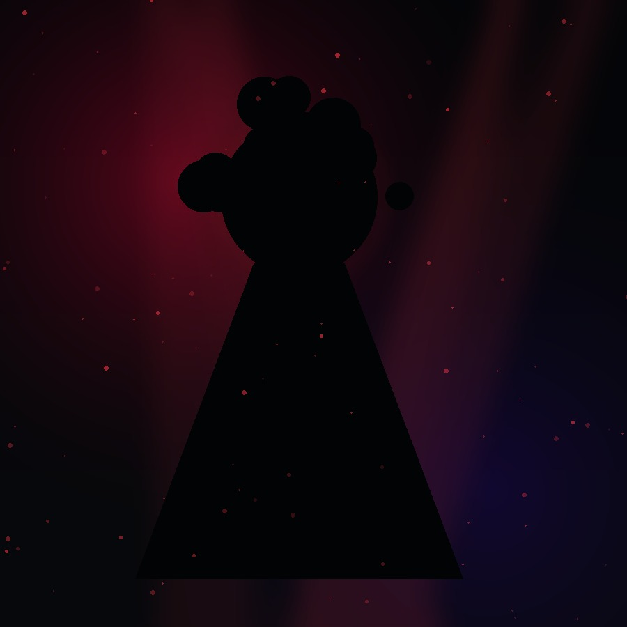

BREAKOUT SIGNALMAYA VALE
Atlanta • Alt-R&B • Momentum 82
Watch discovery cut

A video-first experience designed to surface who deserves attention next.

BREAKOUT SIGNALAtlanta • Alt-R&B • Momentum 82
Interface concept. Fictional artists and illustrative metrics. Product foundation is based on Hiffi’s current seeded content and infrastructure.